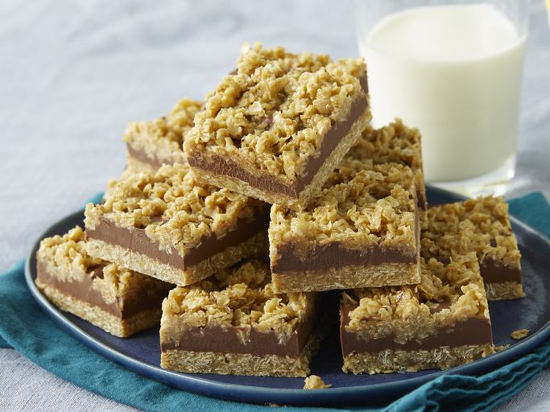

Oat Bars

No-Bake Chocolate Oat Bars
Description
Delicious no-bake oatmeal bars with a chocolaty peanut butter layer. I made about 100 dozen cookies for the holidays, and these were everyone's favorite!
ingredients
- 1 cup butter
- ½ cup packed brown sugar
- 1 teaspoon vanilla extract
- 3 cups quick cooking oats
- 1 cup semisweet chocolate chips
- ½ cup peanut butter
Steps
- Step1: Grease a 9-inch square pan.
- Step2: Melt butter in a large saucepan over medium heat. Stir in brown sugar and vanilla; mix in oats. Cook over low heat until ingredients are well blended, about 2 to 3 minutes.
- Step3: Press 1/2 of the mixture into the bottom of the prepared pan. Reserve remaining oat mixture for topping.
- Step4: Meanwhile, melt chocolate chips and peanut butter in a small heavy saucepan over low heat, stirring frequently until smooth. Pour chocolate mixture over crust in the pan and spread evenly with a knife or the back of a spoon.
- Step5: Crumble remaining oat mixture over chocolate layer, pressing down gently. Cover and refrigerate for 2 to 3 hours or overnight. Bring to room temperature before cutting into bars.
Home